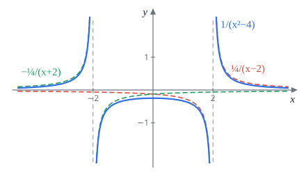
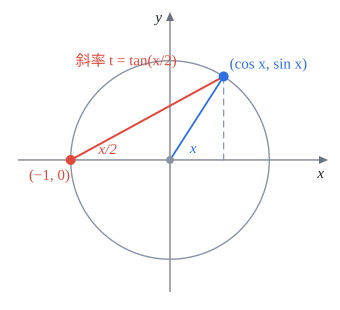

Week 14 積分招式五：部分分式
AP Calculus I（115 學年）Lecture Note 14 教學與題解
講義筆誤p.120（§14.3 方法一）：$u=\sqrt{\tan x}$ 時 $dx=\dfrac{2u}{u^4+1}\,du$，不是 $\dfrac{u^2}{u^4+1}\,du$，所以積分應為 $\displaystyle\int\frac{2u^2}{u^4+1}\,du$，後面拆開時的係數是 $\frac1{\sqrt2}$ 而不是 $\frac1{2\sqrt2}$。見題 14。
講義筆誤p.120（§14.3 方法二）：$I-J$ 的第二行分母漏了根號，應為 $\sqrt{(\sin x+\cos x)^2-1}$；下一行和最後答案是對的。見題 14。
講義筆誤p.122 最後一題：$\dfrac{\sin x}x=\displaystyle\int_0^1\cos(xt)\,dt$，前面不該有負號（$x$ 很小時左邊接近 $1$，是正的）。見題 19。
前幾週的招式（查表、變數變換、分部積分、三角變換）處理的是「長得像某個導數」的函數。這週要對付一整類函數：有理函數 $\dfrac{P(x)}{Q(x)}$，分子分母都是多項式。結論很強：任何有理函數都積得出來，而且有固定的流程。
核心想法是通分的反方向。$\frac1{x-2}-\frac1{x+2}$ 通分得 $\frac4{x^2-4}$；反過來，看到 $\frac1{x^2-4}$ 就把它拆回 $\frac14\cdot\frac1{x-2}-\frac14\cdot\frac1{x+2}$，每一塊都是 $\ln$ 的形式，一下就積完。
14.0 積分招式五：部分分式（Partial Fractions）
四個步驟
- 長除法：若 $\deg P\ge\deg Q$，先除成 $\dfrac{P}{Q}=\text{多項式}+\dfrac{R}{Q}$，$\deg R\lt\deg Q$。多項式直接積。
- 分母因式分解到最簡：拆成一次式 $(ax+b)^n$ 和判別式小於 $0$ 的二次式 $(Ax^2+Bx+C)^k$ 的乘積。
- 設分式和：每個因式依它的次方設一串分式（規則見下），乘開比較係數求出待定常數。
- 逐項積分：一次式那些用變數變換，二次式那些配方後用 $\ln$ 和 $\tan^{-1}$（或三角變換）。
第 3 步的設法：
- 一次因式 $(ax+b)^n$ 貢獻 $n$ 項：$\dfrac{A_1}{ax+b}+\dfrac{A_2}{(ax+b)^2}+\cdots+\dfrac{A_n}{(ax+b)^n}$，分子都是常數。
- 二次因式 $(Ax^2+Bx+C)^k$ 貢獻 $k$ 項：$\dfrac{B_1x+C_1}{Ax^2+Bx+C}+\cdots+\dfrac{B_kx+C_k}{(Ax^2+Bx+C)^k}$，分子都是一次式。
例如
$$\frac{R(x)}{(x-1)^2(2x+1)(x^2+1)^2}=\frac A{x-1}+\frac B{(x-1)^2}+\frac C{2x+1}+\frac{Dx+E}{x^2+1}+\frac{Fx+G}{(x^2+1)^2},$$ $$\frac{R(x)}{x^3(x^2+x+1)^2}=\frac Ax+\frac B{x^2}+\frac C{x^3}+\frac{Dx+E}{x^2+x+1}+\frac{Fx+G}{(x^2+x+1)^2}.$$待定常數的個數剛好等於分母的次數，比較係數就有同樣多條方程式。
定理 14.0.1每個真分式（分子次數小於分母次數）都能寫成以下形式的分式之和：
$$\frac A{(ax+b)^n}\quad\text{或}\quad\frac{Ax+B}{(ax^2+bx+c)^n},\qquad a\ne0,\ b^2-4ac\lt0.$$解題套路求常數時先用代根（把讓某個一次因式為 $0$ 的 $x$ 代進乘開後的等式），一次就殺掉其他項；剩下的再比較最高次或常數項係數。
14.0.1 分子次數 $\ge$ 分母次數：先長除法
題 1求 $\displaystyle\int\frac{x^3-x+1}{x^2+1}\,dx$。
分子三次、分母二次，先除。$x^3-x+1=x(x^2+1)-2x+1$，所以
$$\frac{x^3-x+1}{x^2+1}=x+\frac{-2x+1}{x^2+1}=x-\frac{2x}{x^2+1}+\frac1{x^2+1}.$$中間那項分子剛好是分母的導數（Log-trick），最後一項查表：
$$\int=\frac{x^2}2-\ln(x^2+1)+\tan^{-1}x+C.$$$\dfrac{x^2}2-\ln(x^2+1)+\tan^{-1}x+C$
題 2求 $\displaystyle\int\frac{x^3-x+1}{x^2-1}\,dx$。
$x^3-x=x(x^2-1)$，所以 $\dfrac{x^3-x+1}{x^2-1}=x+\dfrac1{x^2-1}$。剩下的真分式分母可分解成 $(x-1)(x+1)$：
$$\frac1{(x-1)(x+1)}=\frac A{x-1}+\frac B{x+1}\ \Longrightarrow\ 1=A(x+1)+B(x-1).$$代 $x=1$：$A=\frac12$；代 $x=-1$：$B=-\frac12$。於是
$$\int=\frac{x^2}2+\frac12\ln|x-1|-\frac12\ln|x+1|+C.$$$\dfrac{x^2}2+\dfrac12\ln\left|\dfrac{x-1}{x+1}\right|+C$
題 3設 $n$ 為正整數，$a\ne0$。求 $\displaystyle\int\frac1{(ax+b)^n}\,dx$。
這是部分分式拆完後一次因式那類項的通用公式。令 $u=ax+b$，$du=a\,dx$：
$$\int\frac1{(ax+b)^n}\,dx=\frac1a\int u^{-n}\,du.$$$n=1$ 時是 $\frac1a\ln|u|$；$n\gt1$ 時冪次公式 $\frac{u^{1-n}}{1-n}$ 可用。
$n=1$：$\dfrac{\ln|ax+b|}a+C$；$n\gt1$：$\dfrac{(ax+b)^{1-n}}{a(1-n)}+C$（與講義相同）
題 4求 $\displaystyle\int\frac1{x^2-4}\,dx$。
(a) 用分解 $\dfrac1{x^2-4}=\dfrac A{x-2}+\dfrac B{x+2}$。(b) 用代換 $x=2\sec\theta$。
(a) $1=A(x+2)+B(x-2)$。代 $x=2$：$A=\frac14$；代 $x=-2$：$B=-\frac14$。
$$\int\frac1{x^2-4}\,dx=\frac14\ln|x-2|-\frac14\ln|x+2|+C=\frac14\ln\left|\frac{x-2}{x+2}\right|+C.$$
(b) 以 $x\gt2$ 為例，$0\lt\theta\lt\frac\pi2$。$dx=2\sec\theta\tan\theta\,d\theta$，$x^2-4=4\tan^2\theta$：
$$\int\frac{2\sec\theta\tan\theta}{4\tan^2\theta}\,d\theta=\frac12\int\frac{\sec\theta}{\tan\theta}\,d\theta=\frac12\int\csc\theta\,d\theta=\frac12\ln|\csc\theta-\cot\theta|+C.$$由 $\sec\theta=\frac x2$ 畫直角三角形：斜邊 $x$、鄰邊 $2$、對邊 $\sqrt{x^2-4}$，所以 $\csc\theta=\frac x{\sqrt{x^2-4}}$、$\cot\theta=\frac2{\sqrt{x^2-4}}$：
$$\csc\theta-\cot\theta=\frac{x-2}{\sqrt{x^2-4}}=\sqrt{\frac{x-2}{x+2}},\qquad\frac12\ln\sqrt{\frac{x-2}{x+2}}=\frac14\ln\frac{x-2}{x+2}.$$和 (a) 相同。分母能分解成一次式時，部分分式比三角變換快得多。
$\dfrac14\ln\left|\dfrac{x-2}{x+2}\right|+C$
14.0.2 分子次數 $\lt$ 分母次數：二次因式
分母是判別式小於 $0$ 的二次式時，分子 $Ax+B$ 拆成兩部分：一部分湊成分母的導數（積成 $\ln$），剩下的常數配方後積成 $\tan^{-1}$。要用的公式是
$$\int\frac1{u^2+k^2}\,du=\frac1k\tan^{-1}\frac uk+C.$$題 5求 $\displaystyle\int\frac{3x+1}{x^2+2x+5}\,dx$。
判別式 $4-20\lt0$，不能再分解。分母的導數是 $2x+2$，把分子湊成它：
$$3x+1=\frac32(2x+2)-2.$$所以
$$\int\frac{3x+1}{x^2+2x+5}\,dx=\frac32\int\frac{2x+2}{x^2+2x+5}\,dx-2\int\frac{dx}{(x+1)^2+4}.$$第一項是 Log-trick：$\frac32\ln(x^2+2x+5)$。第二項令 $u=x+1$，$k=2$：$-2\cdot\frac12\tan^{-1}\frac{x+1}2$。
$\dfrac32\ln(x^2+2x+5)-\tan^{-1}\dfrac{x+1}2+C$
題 6求 $\displaystyle\int\frac{2x+1}{(x^2+1)^2}\,dx$。
拆成 $\displaystyle\int\frac{2x}{(x^2+1)^2}\,dx+\int\frac1{(x^2+1)^2}\,dx$。
第一項令 $u=x^2+1$，$du=2x\,dx$：$\int u^{-2}\,du=-\frac1u=-\frac1{x^2+1}$。
第二項是二次式的平方，要用三角代換 $x=\tan\theta$：$dx=\sec^2\theta\,d\theta$，$(x^2+1)^2=\sec^4\theta$，
$$\int\frac{\sec^2\theta}{\sec^4\theta}\,d\theta=\int\cos^2\theta\,d\theta=\int\frac{1+\cos2\theta}2\,d\theta=\frac\theta2+\frac{\sin2\theta}4=\frac\theta2+\frac{\sin\theta\cos\theta}2.$$由 $\tan\theta=x$，$\sin\theta\cos\theta=\frac x{\sqrt{1+x^2}}\cdot\frac1{\sqrt{1+x^2}}=\frac x{1+x^2}$。換回 $x$：$\frac12\tan^{-1}x+\frac x{2(1+x^2)}$。
$-\dfrac1{x^2+1}+\dfrac x{2(x^2+1)}+\dfrac12\tan^{-1}x+C=\dfrac{x-2}{2(x^2+1)}+\dfrac12\tan^{-1}x+C$
$\int\frac{dx}{(x^2+1)^2}$ 的結果值得記下來，題 18 會從另一個方向再算一次。
14.0.3 完整範例
題 7求 $\displaystyle\int\frac{x^2-2x-1}{(x-1)^2(x^2+1)}\,dx$。
分子二次、分母四次，不用除。設
$$\frac{x^2-2x-1}{(x-1)^2(x^2+1)}=\frac A{x-1}+\frac B{(x-1)^2}+\frac{Cx+D}{x^2+1}.$$乘開：$x^2-2x-1=A(x-1)(x^2+1)+B(x^2+1)+(Cx+D)(x-1)^2$。
- 代 $x=1$：$-2=2B$，$B=-1$。
- $x^3$ 係數：$0=A+C$。
- 代 $x=0$：$-1=-A+B+D=-A-1+D$，所以 $D=A$。
- $x^2$ 係數：$1=-A+B+D-2C=-A-1+A-2C$，所以 $C=-1$，$A=1$，$D=1$。
逐項積分（最後一項拆成 $-\frac12\cdot\frac{2x}{x^2+1}+\frac1{x^2+1}$）：
$$\int=\ln|x-1|+\frac1{x-1}-\frac12\ln(x^2+1)+\tan^{-1}x+C.$$$\ln|x-1|+\dfrac1{x-1}-\dfrac12\ln(x^2+1)+\tan^{-1}x+C$
14.0.4 綜合題：先代換，再部分分式
有根號時先用變數變換把根號殺掉，常會剩下有理函數，再交給部分分式。
題 8求 $\displaystyle\int\frac1{\sqrt x-\sqrt[3]x}\,dx$。
根號有 $\frac12$ 次和 $\frac13$ 次，取公分母 $6$：令 $x=u^6$（$u\gt0$），則 $\sqrt x=u^3$、$\sqrt[3]x=u^2$、$dx=6u^5\,du$。
$$\int\frac{6u^5}{u^3-u^2}\,du=6\int\frac{u^3}{u-1}\,du.$$長除法：$u^3=(u-1)(u^2+u+1)+1$，
$$6\int\left(u^2+u+1+\frac1{u-1}\right)du=2u^3+3u^2+6u+6\ln|u-1|+C.$$$u=x^{1/6}$ 代回。
$2x^{1/2}+3x^{1/3}+6x^{1/6}+6\ln|x^{1/6}-1|+C$（與講義相同）
題 9求 $\displaystyle\int_5^{12}\frac{\sqrt{x+4}}x\,dx$。
令 $u=\sqrt{x+4}$，$x=u^2-4$，$dx=2u\,du$。上下限 $x=5\to u=3$，$x=12\to u=4$：
$$\int_3^4\frac u{u^2-4}\cdot2u\,du=\int_3^4\frac{2u^2}{u^2-4}\,du=\int_3^4\left(2+\frac8{u^2-4}\right)du.$$由題 4，$\int\frac{8}{u^2-4}\,du=2\ln\left|\frac{u-2}{u+2}\right|$：
$$\Big[2u\Big]_3^4+2\left[\ln\frac{u-2}{u+2}\right]_3^4=2+2\left(\ln\frac13-\ln\frac15\right)=2+2\ln\frac53.$$$2+2\ln\dfrac53\approx3.022$
題 10求下列積分。
(a) $\displaystyle\int_2^4\frac{3x^2+1}{(x+1)(x-5)^2}\,dx$ (b) $\displaystyle\int\frac{6x^2-3x}{(x-2)(x+4)}\,dx$
(c) $\displaystyle\int\frac{x^2+2x+3}{(x-6)(x^2+4)}\,dx$ (d) $\displaystyle\int\frac1{x+2\sqrt{1-x}+2}\,dx$
(a) 設 $\dfrac{3x^2+1}{(x+1)(x-5)^2}=\dfrac A{x+1}+\dfrac B{x-5}+\dfrac C{(x-5)^2}$，乘開 $3x^2+1=A(x-5)^2+B(x+1)(x-5)+C(x+1)$。
代 $x=-1$：$4=36A$，$A=\frac19$。代 $x=5$：$76=6C$，$C=\frac{38}3$。$x^2$ 係數：$3=A+B$，$B=\frac{26}9$。
區間 $[2,4]$ 不含 $-1$、$5$，可以直接積：
$$\frac19\Big[\ln|x+1|\Big]_2^4+\frac{26}9\Big[\ln|x-5|\Big]_2^4+\frac{38}3\left[-\frac1{x-5}\right]_2^4.$$三項分別是 $\frac19\ln\frac53$、$\frac{26}9(\ln1-\ln3)=-\frac{26}9\ln3$、$\frac{38}3\left(1-\frac13\right)=\frac{76}9$。合起來 $\frac{\ln5}9-\frac{27\ln3}9+\frac{76}9$。
(b) 分子分母都二次，先除：$6x^2-3x=6(x^2+2x-8)+(-15x+48)$。再設 $\dfrac{-15x+48}{(x-2)(x+4)}=\dfrac A{x-2}+\dfrac B{x+4}$：代 $x=2$ 得 $A=\frac{18}6=3$，代 $x=-4$ 得 $B=\frac{108}{-6}=-18$。
$$\int\left(6+\frac3{x-2}-\frac{18}{x+4}\right)dx=6x+3\ln|x-2|-18\ln|x+4|+C.$$(c) 設 $\dfrac{x^2+2x+3}{(x-6)(x^2+4)}=\dfrac A{x-6}+\dfrac{Bx+C}{x^2+4}$，乘開 $x^2+2x+3=A(x^2+4)+(Bx+C)(x-6)$。
代 $x=6$：$51=40A$，$A=\frac{51}{40}$。$x^2$ 係數：$1=A+B$，$B=-\frac{11}{40}$。常數項：$3=4A-6C$，$C=\frac{4A-3}6=\frac7{20}$。
$$\frac{51}{40}\int\frac{dx}{x-6}-\frac{11}{40}\int\frac{x}{x^2+4}\,dx+\frac7{20}\int\frac{dx}{x^2+4}=\frac{51}{40}\ln|x-6|-\frac{11}{80}\ln(x^2+4)+\frac7{40}\tan^{-1}\frac x2+C.$$(d) 令 $u=\sqrt{1-x}$，$x=1-u^2$，$dx=-2u\,du$。分母 $1-u^2+2u+2=-(u^2-2u-3)=-(u-3)(u+1)$：
$$\int\frac{-2u}{-(u-3)(u+1)}\,du=\int\frac{2u}{(u-3)(u+1)}\,du.$$$\dfrac{2u}{(u-3)(u+1)}=\dfrac A{u-3}+\dfrac B{u+1}$：代 $u=3$ 得 $A=\frac64=\frac32$，代 $u=-1$ 得 $B=\frac{-2}{-4}=\frac12$。
$$\frac32\ln|u-3|+\frac12\ln|u+1|+C,\qquad u=\sqrt{1-x}.$$(a) $\dfrac{\ln5}9-3\ln3+\dfrac{76}9\approx5.327$ (b) $6x+3\ln|x-2|-18\ln|x+4|+C$
(c) $\dfrac{51}{40}\ln|x-6|-\dfrac{11}{80}\ln(x^2+4)+\dfrac7{40}\tan^{-1}\dfrac x2+C$ (d) $\dfrac12\ln(\sqrt{1-x}+1)+\dfrac32\ln|\sqrt{1-x}-3|+C$（皆與講義相同）
本節練習
練習 14.0-1求 $\displaystyle\int\frac{x+5}{x^2+x-2}\,dx$。
詳解
$x^2+x-2=(x-1)(x+2)$。設 $\dfrac{x+5}{(x-1)(x+2)}=\dfrac A{x-1}+\dfrac B{x+2}$，$x+5=A(x+2)+B(x-1)$。
代 $x=1$：$6=3A$，$A=2$。代 $x=-2$：$3=-3B$，$B=-1$。
$$\int\left(\frac2{x-1}-\frac1{x+2}\right)dx=2\ln|x-1|-\ln|x+2|+C.$$$2\ln|x-1|-\ln|x+2|+C$
練習 14.0-2求 $\displaystyle\int\frac{x^3+x}{x-1}\,dx$。
詳解
分子三次、分母一次，長除法：$x^3+x=(x-1)(x^2+x+2)+2$。
$$\int\left(x^2+x+2+\frac2{x-1}\right)dx=\frac{x^3}3+\frac{x^2}2+2x+2\ln|x-1|+C.$$$\dfrac{x^3}3+\dfrac{x^2}2+2x+2\ln|x-1|+C$
練習 14.0-3求 $\displaystyle\int_0^1\frac{x+3}{x^2+2x+2}\,dx$。
詳解
判別式 $4-8\lt0$。分母導數 $2x+2$，分子 $x+3=\frac12(2x+2)+2$；分母配方 $(x+1)^2+1$：
$$\int_0^1\frac{x+3}{x^2+2x+2}\,dx=\frac12\Big[\ln(x^2+2x+2)\Big]_0^1+2\Big[\tan^{-1}(x+1)\Big]_0^1=\frac12\ln\frac52+2\left(\tan^{-1}2-\frac\pi4\right).$$$\dfrac12\ln\dfrac52+2\tan^{-1}2-\dfrac\pi2\approx1.102$
練習 14.0-4求 $\displaystyle\int\frac{2x+3}{x(x+1)^2}\,dx$。
詳解
設 $\dfrac{2x+3}{x(x+1)^2}=\dfrac Ax+\dfrac B{x+1}+\dfrac C{(x+1)^2}$，$2x+3=A(x+1)^2+Bx(x+1)+Cx$。
代 $x=0$：$A=3$。代 $x=-1$：$1=-C$，$C=-1$。$x^2$ 係數：$0=A+B$，$B=-3$。
$$\int\left(\frac3x-\frac3{x+1}-\frac1{(x+1)^2}\right)dx=3\ln|x|-3\ln|x+1|+\frac1{x+1}+C.$$$3\ln\left|\dfrac x{x+1}\right|+\dfrac1{x+1}+C$
練習 14.0-5求 $\displaystyle\int\frac{\sqrt x}{x-4}\,dx$。
詳解
令 $u=\sqrt x$，$x=u^2$，$dx=2u\,du$：
$$\int\frac{u}{u^2-4}\cdot2u\,du=\int\frac{2u^2}{u^2-4}\,du=\int\left(2+\frac8{u^2-4}\right)du=2u+2\ln\left|\frac{u-2}{u+2}\right|+C.$$（$\frac8{u^2-4}=\frac2{u-2}-\frac2{u+2}$，和題 9 一樣。）
$2\sqrt x+2\ln\left|\dfrac{\sqrt x-2}{\sqrt x+2}\right|+C$
14.1 積分策略 B-S-P-T-F
到這週，講義的五大招全部出齊。拿到一題積分，照這個順序想：
B 腦袋（Brain）看得出來的直接寫，差常數就補；$\int_{-a}^a\text{奇函數}=0$；是不是背過的基本積分。
S 變數變換（Substitution）$u=$ 最複雜的那團；分子是不是分母的導數（Log-trick）；有根號就令 $x=u^k$ 把根號全殺掉（或 $u=\sqrt x$）；有 $e^x$、$\ln x$ 的次方就令 $u=e^x$ 或 $u=\ln x$。定積分記得換上下限。
P 分部積分（Integration by parts）見 Week 13 §13.1。L-I-A-T-E 決定誰微分；代數函數乘超越函數；反函數（$\ln x$、$\sin^{-1}x$）乘 $1$ 去積；三角乘指數做兩次再移項。
T 三角變換（Trig substitution）見 Week 13 §13.4。$x^2+a^2$ 令 $x=a\tan\theta$；$\sqrt{a^2-x^2}$ 令 $x=a\sin\theta$；$\sqrt{x^2-a^2}$ 令 $x=a\sec\theta$。
F 部分分式（Partial fractions）有理函數拆成 $\frac A{(ax+b)^n}$ 和 $\frac{Ax+B}{(ax^2+bx+c)^n}$；二次式的次方先配方再用 $\tan$ 代換。
以上都不行，而被積函數是 $\sin x$、$\cos x$ 組成的分式，還有最後一招萬能變換（§14.2）。
順序的意思是「越前面越便宜」。F 一定做得完但計算量最大，所以看到有理函數也先檢查 B、S：例如 $\int\frac{x}{x^4+1}\,dx$ 令 $u=x^2$ 一步就是 $\tan^{-1}$，不必把 $x^4+1$ 拆開（練習 14.1-1）。
本節練習
練習 14.1-1求 $\displaystyle\int\frac{x}{x^4+1}\,dx$。
詳解
S：$x^4=(x^2)^2$，而 $x$ 是 $x^2$ 的導數的一半。令 $u=x^2$，$du=2x\,dx$：
$$\frac12\int\frac{du}{u^2+1}=\frac12\tan^{-1}u+C.$$$\dfrac12\tan^{-1}(x^2)+C$
練習 14.1-2求 $\displaystyle\int\frac{2x+2}{x^2+2x+3}\,dx$。
詳解
S 的 Log-trick：分子 $2x+2$ 正是分母的導數，直接 $\ln$。分母 $(x+1)^2+2\gt0$，絕對值可省。
$\ln(x^2+2x+3)+C$
練習 14.1-3求 $\displaystyle\int\frac{e^x}{e^{2x}+3e^x+2}\,dx$。
詳解
S 再 F：令 $u=e^x$，$du=e^x\,dx$，變成有理函數
$$\int\frac{du}{u^2+3u+2}=\int\frac{du}{(u+1)(u+2)}=\int\left(\frac1{u+1}-\frac1{u+2}\right)du=\ln\frac{u+1}{u+2}+C.$$（$u=e^x\gt0$，絕對值可省。）
$\ln\dfrac{e^x+1}{e^x+2}+C$
練習 14.1-4求 $\displaystyle\int_{-1}^1\frac{x^3\cos x}{1+x^2}\,dx$。
詳解
B：$x^3$ 是奇函數，$\cos x$ 和 $1+x^2$ 是偶函數，奇 $\times$ 偶 $\div$ 偶仍是奇函數，在對稱區間上積分為 $0$。這題的反導函數根本寫不出來，不先看對稱就會卡死。
$0$
14.2 積分招式六：萬能變換（Weierstrass substitution）（*）延伸
講義註明這招是補充，考題不會出現。它處理的是 $\sin x$、$\cos x$ 組成的分式，例如 $\int\frac{dx}{1+\cos x}$、$\int\frac{dx}{2+2\sin x+\cos x}$。想法是令
$$t=\tan\frac x2,$$則 $\sin x$、$\cos x$、$dx$ 全部變成 $t$ 的有理式，再交給部分分式：
$$\sin x=\frac{2t}{1+t^2},\qquad\cos x=\frac{1-t^2}{1+t^2},\qquad dx=\frac{2}{1+t^2}\,dt.$$推導：$\sin x=2\sin\frac x2\cos\frac x2=2\tan\frac x2\cos^2\frac x2=\frac{2t}{\sec^2\frac x2}=\frac{2t}{1+t^2}$；$\cos x$ 同理用 $\cos^2\frac x2-\sin^2\frac x2$。$dt=\frac12\sec^2\frac x2\,dx=\frac{1+t^2}2\,dx$。

題 11求 $\displaystyle\int\frac1{1+\sin x}\,dx$。
令 $t=\tan\frac x2$。$1+\sin x=\frac{1+t^2+2t}{1+t^2}=\frac{(1+t)^2}{1+t^2}$，$dx=\frac2{1+t^2}\,dt$：
$$\int\frac{1+t^2}{(1+t)^2}\cdot\frac2{1+t^2}\,dt=2\int\frac{dt}{(1+t)^2}=-\frac2{1+t}+C.$$$-\dfrac2{1+\tan\frac x2}+C$（與講義相同）
題 12求 $\displaystyle\int\frac1{2+\cos x}\,dx$。
$2+\cos x=\frac{2(1+t^2)+1-t^2}{1+t^2}=\frac{t^2+3}{1+t^2}$：
$$\int\frac{1+t^2}{t^2+3}\cdot\frac2{1+t^2}\,dt=2\int\frac{dt}{t^2+3}=\frac2{\sqrt3}\tan^{-1}\frac t{\sqrt3}+C.$$$\dfrac2{\sqrt3}\tan^{-1}\left(\dfrac1{\sqrt3}\tan\dfrac x2\right)+C$（與講義相同）
$\tan\frac x2$ 在 $x=\pm\pi$ 沒有定義，所以題 12 的答案只在 $(-\pi,\pi)$ 這類區間上是反導函數。$\frac1{2+\cos x}$ 本身處處連續，要在 $[0,2\pi]$ 上算定積分就得分段，不能直接把 $0$ 和 $2\pi$ 代進去（代進去得 $0$，但被積函數恆正）。
題 13求 $\displaystyle\int\frac{\cos x}{1+\cos x}\,dx$。
先拆：$\frac{\cos x}{1+\cos x}=1-\frac1{1+\cos x}$。剩下那項用萬能變換，$1+\cos x=\frac{2}{1+t^2}$：
$$\int\frac1{1+\cos x}\,dx=\int\frac{1+t^2}2\cdot\frac2{1+t^2}\,dt=\int dt=t+C.$$$x-\tan\dfrac x2+C$（與講義相同）
本節練習
練習 14.2-1求 $\displaystyle\int\frac1{1+\sin x+\cos x}\,dx$。
詳解
令 $t=\tan\frac x2$：$1+\sin x+\cos x=\frac{1+t^2+2t+1-t^2}{1+t^2}=\frac{2(1+t)}{1+t^2}$。
$$\int\frac{1+t^2}{2(1+t)}\cdot\frac2{1+t^2}\,dt=\int\frac{dt}{1+t}=\ln|1+t|+C.$$$\ln\left|1+\tan\dfrac x2\right|+C$
練習 14.2-2求 $\displaystyle\int_0^{\pi/2}\frac1{2-\sin x}\,dx$。
詳解
令 $t=\tan\frac x2$，$x=0\to t=0$，$x=\frac\pi2\to t=1$。$2-\sin x=\frac{2+2t^2-2t}{1+t^2}$：
$$\int_0^1\frac{1+t^2}{2(t^2-t+1)}\cdot\frac2{1+t^2}\,dt=\int_0^1\frac{dt}{\left(t-\frac12\right)^2+\frac34}=\frac2{\sqrt3}\left[\tan^{-1}\frac{2t-1}{\sqrt3}\right]_0^1.$$$\tan^{-1}\frac1{\sqrt3}-\tan^{-1}\left(-\frac1{\sqrt3}\right)=\frac\pi6+\frac\pi6=\frac\pi3$。
$\dfrac{2\pi}{3\sqrt3}\approx1.209$
14.3 挑戰題（*）延伸
題 14求 $\displaystyle\int\sqrt{\tan x}\,dx$。
以 $0\lt x\lt\frac\pi2$ 為例（$\tan x\gt0$）。
方法一：代換成有理函數。令 $u=\sqrt{\tan x}$，$u^2=\tan x$，兩邊微分 $2u\,du=\sec^2x\,dx=(1+u^4)\,dx$，所以 $dx=\frac{2u}{u^4+1}\,du$（講義寫成 $\frac{u^2}{u^4+1}$，少了 $2$ 也多了一個 $u$）：
$$\int\sqrt{\tan x}\,dx=\int u\cdot\frac{2u}{u^4+1}\,du=\int\frac{2u^2}{u^4+1}\,du.$$講義的路線是用 $u^4+1=(u^2+\sqrt2u+1)(u^2-\sqrt2u+1)$ 做部分分式：
$$\frac{2u^2}{u^4+1}=\frac1{\sqrt2}\left[\frac u{u^2-\sqrt2u+1}-\frac u{u^2+\sqrt2u+1}\right],$$每一項再配方、拆成 $\ln$ 和 $\tan^{-1}$。更快的是 Week 11 §11.3 的 $u\pm\frac1u$ 技巧：$2u^2=(u^2+1)+(u^2-1)$，上下同除 $u^2$，
$$\int\frac{u^2+1}{u^4+1}\,du=\int\frac{1+\frac1{u^2}}{\left(u-\frac1u\right)^2+2}\,du=\frac1{\sqrt2}\tan^{-1}\frac{u-\frac1u}{\sqrt2},$$ $$\int\frac{u^2-1}{u^4+1}\,du=\int\frac{1-\frac1{u^2}}{\left(u+\frac1u\right)^2-2}\,du=\frac1{2\sqrt2}\ln\left|\frac{u+\frac1u-\sqrt2}{u+\frac1u+\sqrt2}\right|.$$合起來（上下同乘 $u$ 整理）：
$$\int\sqrt{\tan x}\,dx=\frac1{\sqrt2}\tan^{-1}\frac{u^2-1}{\sqrt2\,u}+\frac1{2\sqrt2}\ln\frac{u^2-\sqrt2u+1}{u^2+\sqrt2u+1}+C,\quad u=\sqrt{\tan x}.$$方法二：配對 $\sqrt{\cot x}$。令 $I=\int\sqrt{\tan x}\,dx$，$J=\int\sqrt{\cot x}\,dx$。因為
$$\sqrt{\tan x}\pm\sqrt{\cot x}=\frac{\sin x\pm\cos x}{\sqrt{\sin x\cos x}}=\sqrt2\,\frac{\sin x\pm\cos x}{\sqrt{\sin2x}},$$而 $\sin2x=1-(\sin x-\cos x)^2=(\sin x+\cos x)^2-1$：
- $I+J$：令 $u=\sin x-\cos x$，$du=(\cos x+\sin x)\,dx$，得 $\sqrt2\int\frac{du}{\sqrt{1-u^2}}=\sqrt2\sin^{-1}(\sin x-\cos x)$。
- $I-J$：令 $u=\sin x+\cos x$，$du=(\cos x-\sin x)\,dx$，得 $-\sqrt2\int\frac{du}{\sqrt{u^2-1}}=-\sqrt2\ln\left|u+\sqrt{u^2-1}\right|$。這行講義的分母漏了根號。
兩式相加除以 $2$，並用 $\sqrt{u^2-1}=\sqrt{\sin2x}$：
$$I=\frac1{\sqrt2}\sin^{-1}(\sin x-\cos x)-\frac1{\sqrt2}\ln\left|\sin x+\cos x+\sqrt{\sin2x}\right|+C.$$$\dfrac1{\sqrt2}\sin^{-1}(\sin x-\cos x)-\dfrac1{\sqrt2}\ln\left|\sin x+\cos x+\sqrt{\sin2x}\right|+C$（兩種方法的答案差一個常數，已用微分驗證）
題 15求下列積分。
(a) $\displaystyle\int x\tan^2x\,dx$ (b) $\displaystyle\int(\sin^{-1}x)^2\,dx$ (c) $\displaystyle\int\sin^{-1}\sqrt x\,dx$ (d) $\displaystyle\int\frac1{1-\tan^2x}\,dx$
(e) $\displaystyle\int\ln\left(\sqrt x+\sqrt{x+1}\right)dx$（提示：$x=\tan^2\theta$） (f) $\displaystyle\int\frac1{x-\sqrt{x^2-1}}\,dx$（提示：先有理化）
(g) $\displaystyle\int\frac{2e^{2x}-e^x}{\sqrt{3e^{2x}-6e^x-1}}\,dx$ (h) $\displaystyle\int\frac1{x^4+1}\,dx$ (i) $\displaystyle\int xe^x\sin x\,dx$
(j) $\displaystyle\int_0^{\pi/4}\ln(1+\tan x)\,dx$（提示：令 $u=\frac\pi4-x$） (k) $\displaystyle\int\sqrt[3]{\tan x}\,dx$
(a) P：先把 $\tan^2x$ 換成 $\sec^2x-1$，$\int x\tan^2x\,dx=\int x\sec^2x\,dx-\frac{x^2}2$。前者令 $u=x$、$dv=\sec^2x\,dx$：
$$\int x\sec^2x\,dx=x\tan x-\int\tan x\,dx=x\tan x+\ln|\cos x|.$$(b) P 兩次。令 $u=(\sin^{-1}x)^2$、$dv=dx$：
$$\int(\sin^{-1}x)^2\,dx=x(\sin^{-1}x)^2-2\int\frac{x\sin^{-1}x}{\sqrt{1-x^2}}\,dx.$$後者令 $u=\sin^{-1}x$、$dv=\frac{x}{\sqrt{1-x^2}}\,dx$，$v=-\sqrt{1-x^2}$：$\int\frac{x\sin^{-1}x}{\sqrt{1-x^2}}\,dx=-\sqrt{1-x^2}\sin^{-1}x+x$。代回即得。
(c) P：$u=\sin^{-1}\sqrt x$，$du=\frac1{\sqrt{1-x}}\cdot\frac1{2\sqrt x}\,dx$：
$$\int\sin^{-1}\sqrt x\,dx=x\sin^{-1}\sqrt x-\frac12\int\sqrt{\frac x{1-x}}\,dx.$$T：令 $x=\sin^2\theta$，$dx=2\sin\theta\cos\theta\,d\theta$，$\sqrt{\frac x{1-x}}=\tan\theta$，積分變成 $\int2\sin^2\theta\,d\theta=\theta-\sin\theta\cos\theta=\sin^{-1}\sqrt x-\sqrt{x-x^2}$。
(d) 上下同乘 $\cos^2x$：$\frac{\cos^2x}{\cos^2x-\sin^2x}=\frac{\cos^2x}{\cos2x}=\frac{1+\cos2x}{2\cos2x}=\frac12\sec2x+\frac12$。
$$\int=\frac x2+\frac14\ln|\sec2x+\tan2x|+C.$$(e) P：$\frac{d}{dx}\ln(\sqrt x+\sqrt{x+1})=\frac{\frac1{2\sqrt x}+\frac1{2\sqrt{x+1}}}{\sqrt x+\sqrt{x+1}}=\frac1{2\sqrt x\sqrt{x+1}}$，所以
$$\int\ln(\sqrt x+\sqrt{x+1})\,dx=x\ln(\sqrt x+\sqrt{x+1})-\frac12\int\sqrt{\frac x{x+1}}\,dx.$$T：令 $x=\tan^2\theta$，$dx=2\tan\theta\sec^2\theta\,d\theta$，$\sqrt{\frac x{x+1}}=\sin\theta$：
$$\int2\sin\theta\tan\theta\sec^2\theta\,d\theta=2\int(\sec^3\theta-\sec\theta)\,d\theta=\sec\theta\tan\theta-\ln|\sec\theta+\tan\theta|=\sqrt{x^2+x}-\ln(\sqrt x+\sqrt{x+1}).$$（用到 $\int\sec^3\theta\,d\theta=\frac12(\sec\theta\tan\theta+\ln|\sec\theta+\tan\theta|)$。）代回整理。
(f) 有理化：$\frac1{x-\sqrt{x^2-1}}\cdot\frac{x+\sqrt{x^2-1}}{x+\sqrt{x^2-1}}=\frac{x+\sqrt{x^2-1}}{x^2-(x^2-1)}=x+\sqrt{x^2-1}$。後者用 $x=\sec\theta$，$\int\sqrt{x^2-1}\,dx=\frac12\left(x\sqrt{x^2-1}-\ln|x+\sqrt{x^2-1}|\right)$。
(g) S：令 $u=e^x$，$du=e^x\,dx$，得 $\int\frac{2u-1}{\sqrt{3u^2-6u-1}}\,du$。根號裡導數是 $6u-6$，把分子湊成 $2u-1=\frac13(6u-6)+1$：
$$\frac13\int\frac{6u-6}{\sqrt{3u^2-6u-1}}\,du=\frac23\sqrt{3u^2-6u-1},$$ $$\int\frac{du}{\sqrt{3(u-1)^2-4}}=\frac1{\sqrt3}\ln\left|\sqrt3(u-1)+\sqrt{3u^2-6u-1}\right|\quad(\text{T：}\sqrt3(u-1)=2\sec\theta).$$(h) 和題 14 方法一同一招：$1=\frac12\left[(x^2+1)-(x^2-1)\right]$，
$$\int\frac{dx}{x^4+1}=\frac12\cdot\frac1{\sqrt2}\tan^{-1}\frac{x^2-1}{\sqrt2x}-\frac12\cdot\frac1{2\sqrt2}\ln\frac{x^2-\sqrt2x+1}{x^2+\sqrt2x+1}.$$$\tan^{-1}\frac{x^2-1}{\sqrt2x}$ 在 $x=0$ 跳一下；換成 $\tan^{-1}(\sqrt2x+1)+\tan^{-1}(\sqrt2x-1)$（在 $x\gt0$、$x\lt0$ 各自只差常數）就在整條實數線上連續。
(i) P 再用「三角乘指數」的結果 $\int e^x\sin x\,dx=\frac{e^x(\sin x-\cos x)}2$、$\int e^x\cos x\,dx=\frac{e^x(\sin x+\cos x)}2$。令 $u=x$、$dv=e^x\sin x\,dx$：
$$\int xe^x\sin x\,dx=\frac{xe^x(\sin x-\cos x)}2-\frac12\int e^x(\sin x-\cos x)\,dx=\frac{xe^x(\sin x-\cos x)}2+\frac{e^x\cos x}2.$$(j) 這是 King's rule。令 $u=\frac\pi4-x$，$1+\tan\left(\frac\pi4-u\right)=1+\frac{1-\tan u}{1+\tan u}=\frac2{1+\tan u}$：
$$I=\int_0^{\pi/4}\ln\frac2{1+\tan u}\,du=\frac\pi4\ln2-I\ \Longrightarrow\ I=\frac\pi8\ln2.$$(k) 仿題 14：令 $u=\sqrt[3]{\tan x}$，$3u^2\,du=(1+u^6)\,dx$，得 $\int\frac{3u^3}{1+u^6}\,du$。再令 $w=u^2$，$dw=2u\,du$：$\frac32\int\frac{w}{1+w^3}\,dw$。F：$1+w^3=(w+1)(w^2-w+1)$，
$$\frac w{1+w^3}=-\frac13\cdot\frac1{w+1}+\frac13\cdot\frac{w+1}{w^2-w+1}.$$$\int\frac{w+1}{w^2-w+1}\,dw=\frac12\ln(w^2-w+1)+\frac32\int\frac{dw}{(w-\frac12)^2+\frac34}=\frac12\ln(w^2-w+1)+\sqrt3\tan^{-1}\frac{2w-1}{\sqrt3}$。乘上 $\frac32\cdot\frac13=\frac12$ 整理。
(a) $x\tan x+\ln|\cos x|-\dfrac{x^2}2+C$ (b) $x(\sin^{-1}x)^2+2\sqrt{1-x^2}\sin^{-1}x-2x+C$
(c) $\left(x-\dfrac12\right)\sin^{-1}\sqrt x+\dfrac12\sqrt{x-x^2}+C$ (d) $\dfrac x2+\dfrac14\ln|\sec2x+\tan2x|+C$
(e) $\left(x+\dfrac12\right)\ln(\sqrt x+\sqrt{x+1})-\dfrac12\sqrt{x^2+x}+C$ (f) $\dfrac{x^2}2+\dfrac12x\sqrt{x^2-1}-\dfrac12\ln|x+\sqrt{x^2-1}|+C$
(g) $\dfrac23\sqrt{3e^{2x}-6e^x-1}+\dfrac1{\sqrt3}\ln\left|\sqrt3(e^x-1)+\sqrt{3e^{2x}-6e^x-1}\right|+C$
(h) $\dfrac1{4\sqrt2}\ln\dfrac{x^2+\sqrt2x+1}{x^2-\sqrt2x+1}+\dfrac1{2\sqrt2}\left[\tan^{-1}(\sqrt2x+1)+\tan^{-1}(\sqrt2x-1)\right]+C$
(i) $\dfrac{xe^x(\sin x-\cos x)}2+\dfrac{e^x\cos x}2+C$ (j) $\dfrac\pi8\ln2$
(k) $-\dfrac12\ln(w+1)+\dfrac14\ln(w^2-w+1)+\dfrac{\sqrt3}2\tan^{-1}\dfrac{2w-1}{\sqrt3}+C$，$w=\tan^{2/3}x$（各題皆以微分或數值積分驗證）
本節練習
練習 14.3-1求 $\displaystyle\int\ln(x^2+1)\,dx$。
詳解
P：令 $u=\ln(x^2+1)$、$dv=dx$：
$$\int\ln(x^2+1)\,dx=x\ln(x^2+1)-\int\frac{2x^2}{x^2+1}\,dx.$$F（先除）：$\frac{2x^2}{x^2+1}=2-\frac2{x^2+1}$，積分是 $2x-2\tan^{-1}x$。
$x\ln(x^2+1)-2x+2\tan^{-1}x+C$
練習 14.3-2求 $\displaystyle\int\frac1{x^3+1}\,dx$。
詳解
$x^3+1=(x+1)(x^2-x+1)$。設 $\frac1{x^3+1}=\frac A{x+1}+\frac{Bx+C}{x^2-x+1}$，$1=A(x^2-x+1)+(Bx+C)(x+1)$。
代 $x=-1$：$A=\frac13$。$x^2$ 係數：$0=A+B$，$B=-\frac13$。常數項：$1=A+C$，$C=\frac23$。
$\frac{-\frac13x+\frac23}{x^2-x+1}=-\frac16\cdot\frac{2x-1}{x^2-x+1}+\frac12\cdot\frac1{(x-\frac12)^2+\frac34}$，
$$\int=\frac13\ln|x+1|-\frac16\ln(x^2-x+1)+\frac12\cdot\frac2{\sqrt3}\tan^{-1}\frac{2x-1}{\sqrt3}+C.$$$\dfrac13\ln|x+1|-\dfrac16\ln(x^2-x+1)+\dfrac1{\sqrt3}\tan^{-1}\dfrac{2x-1}{\sqrt3}+C$
練習 14.3-3求 $\displaystyle\int\frac{\sin^{-1}x}{x^2}\,dx$，$0\lt x\lt1$。
詳解
P：$\sin^{-1}x$ 微分會變成代數式，適合當 $u$；$\frac1{x^2}$ 好積分，當 $dv$。令 $u=\sin^{-1}x$、$dv=\frac{dx}{x^2}$，$du=\frac{dx}{\sqrt{1-x^2}}$、$v=-\frac1x$：
$$\int\frac{\sin^{-1}x}{x^2}\,dx=-\frac{\sin^{-1}x}{x}+\int\frac{dx}{x\sqrt{1-x^2}}.$$T：右邊的積分有 $\sqrt{1-x^2}$，令 $x=\sin\theta$，$dx=\cos\theta\,d\theta$，$0\lt\theta\lt\frac\pi2$ 時 $\sqrt{1-x^2}=\cos\theta$：
$$\int\frac{\cos\theta\,d\theta}{\sin\theta\cos\theta}=\int\csc\theta\,d\theta=-\ln\left|\csc\theta+\cot\theta\right|+C.$$用三角形換回 $x$：$\csc\theta=\frac1x$，$\cot\theta=\frac{\sqrt{1-x^2}}x$，所以 $-\ln\dfrac{1+\sqrt{1-x^2}}{x}$。
檢查：對 $-\ln\frac{1+\sqrt{1-x^2}}x$ 微分會回到 $\frac1{x\sqrt{1-x^2}}$。
$-\dfrac{\sin^{-1}x}{x}-\ln\dfrac{1+\sqrt{1-x^2}}{x}+C$
14.4 附錄：部分分式常見問題
分母是三次或更高次怎麼辦？代數上有個深刻的結果：每個實係數多項式都能分解成一次式和二次式的乘積（不一定好看）。例如看起來拆不開的 $x^4+1$：
$$x^4+1=(x^2+1)^2-2x^2=(x^2-\sqrt2x+1)(x^2+\sqrt2x+1).$$所以遇到高次分母，先分解成一次與二次的乘積，再設分式和。例如（但願考試不會出）
$$\frac{P(x)}{(x-1)^2(x+2)^3(x^2+3x+1)^2}$$要設成 $\frac A{x-1}+\frac B{(x-1)^2}+\frac C{x+2}+\frac D{(x+2)^2}+\frac E{(x+2)^3}+\frac{Fx+G}{x^2+3x+1}+\frac{Hx+I}{(x^2+3x+1)^2}$。（注意 $x^2+3x+1$ 判別式 $5\gt0$，真的要拆時還能再分解成兩個一次式；講義這裡只是示範格式。）
為什麼一次因式那些項的分子都是常數？因為任何 $d$ 次多項式都能對某個 $c$ 展開：
事實設 $P(x)$ 為 $d$ 次多項式，$c$ 為常數，則存在常數 $a_0,\dots,a_d$ 使 $P(x)=a_0+a_1(x-c)+a_2(x-c)^2+\cdots+a_d(x-c)^d$。
證明只要把 $x$ 寫成 $(x-c)+c$，代進 $P(x)$ 用二項式展開、整理成 $(x-c)$ 的次方即可。兩邊除以 $(x-c)^k$（$k\gt d$）：
$$\frac{P(x)}{(x-c)^k}=\frac{a_0}{(x-c)^k}+\frac{a_1}{(x-c)^{k-1}}+\cdots+\frac{a_d}{(x-c)^{k-d}},$$每個分子都是常數。練習 14.4-2 是一個具體例子。
定理 14.0.1 背後的兩個代數定理是代數基本定理和中國剩餘定理，證明超出本課程範圍。
本節練習
練習 14.4-1寫出 $\dfrac{x^2+1}{(x+3)^3(x^2+4)(x^2+x+1)^2}$ 的部分分式形式（不必求常數）。
詳解
$x^2+4$、$x^2+x+1$ 判別式都小於 $0$，不能再拆。$(x+3)^3$ 給三項常數分子，$x^2+4$ 給一項一次分子，$(x^2+x+1)^2$ 給兩項一次分子。分子次數 $2$ 小於分母次數 $3+2+4=9$，不用除。待定常數共 $3+2+4=9$ 個，和分母次數相同。
$\dfrac A{x+3}+\dfrac B{(x+3)^2}+\dfrac C{(x+3)^3}+\dfrac{Dx+E}{x^2+4}+\dfrac{Fx+G}{x^2+x+1}+\dfrac{Hx+I}{(x^2+x+1)^2}$
練習 14.4-2把 $x^2+3x+1$ 寫成 $(x-1)$ 的次方和，藉此求 $\displaystyle\int\frac{x^2+3x+1}{(x-1)^3}\,dx$。
詳解
令 $x=(x-1)+1$：$x^2=(x-1)^2+2(x-1)+1$，$3x=3(x-1)+3$，所以
$$x^2+3x+1=(x-1)^2+5(x-1)+5.$$除以 $(x-1)^3$：$\dfrac1{x-1}+\dfrac5{(x-1)^2}+\dfrac5{(x-1)^3}$，不必解聯立。逐項用題 3 的公式積分。
$\ln|x-1|-\dfrac5{x-1}-\dfrac5{2(x-1)^2}+C$
練習 14.4-3仿照 $x^4+1$ 的分解，把 $x^4+4$ 分解成兩個二次式，並求 $\dfrac1{x^4+4}$ 的部分分式。
詳解
配方：$x^4+4=(x^2+2)^2-4x^2=(x^2-2x+2)(x^2+2x+2)$，兩個判別式都是 $4-8\lt0$。
設 $\frac1{x^4+4}=\frac{Ax+B}{x^2+2x+2}+\frac{Cx+D}{x^2-2x+2}$。把 $x$ 換成 $-x$ 左邊不變、兩個分母互換，所以 $C=-A$、$D=B$。乘開比較：
- $x^2$ 係數：$(Ax+B)(x^2-2x+2)+(-Ax+B)(x^2+2x+2)$ 的 $x^2$ 項是 $-2A+B-2A+B=2B-4A=0$。
- 常數項：$2B+2B=4B=1$，$B=\frac14$，$A=\frac18$。
（$x^3$、$x$ 項由對稱自動抵消。）
$\dfrac1{x^4+4}=\dfrac{\frac18x+\frac14}{x^2+2x+2}+\dfrac{-\frac18x+\frac14}{x^2-2x+2}$
14.5 積分招式七：費曼積分法（Feynman Trick）（*）延伸
想法：在被積函數裡塞一個參數 $t$，得到一個 $t$ 的函數 $I(t)=\int_a^bf(x,t)\,dx$。如果 $I(t)$ 本身好算，而我們要的積分剛好是 $I'(t)$ 在某點的值，就可以「對積分號裡面微分」：
$$\frac{d}{dt}\int_a^bf(x,t)\,dx=\int_a^b\frac{\partial}{\partial t}f(x,t)\,dx.$$$\frac{\partial}{\partial t}$ 是偏微分，意思是把 $x$ 當常數、只對 $t$ 微分。微分和積分能交換需要條件（例如 $f$ 和 $\frac{\partial f}{\partial t}$ 都連續、區間有界），本課程的例子都滿足。
題 16求 $\displaystyle\int_0^\pi x\cos x\,dx$。
方法一（分部積分）：$\int_0^\pi x\cos x\,dx=\Big[x\sin x+\cos x\Big]_0^\pi=(0-1)-(0+1)=-2$。
方法二（費曼）：把 $x\cos x$ 看成 $x\cos(tx)$ 在 $t=1$ 的值，而 $\frac{\partial}{\partial t}\sin(tx)=x\cos(tx)$。令
$$I(t)=\int_0^\pi\sin(tx)\,dx=\left[-\frac{\cos(tx)}t\right]_0^\pi=\frac1t-\frac{\cos(t\pi)}t.$$則 $I'(t)=\int_0^\pi x\cos(tx)\,dx$，所求是 $I'(1)$。對閉式微分：
$$I'(t)=-\frac1{t^2}+\frac{\pi t\sin(t\pi)+\cos(t\pi)}{t^2},\qquad I'(1)=-1+(0-1)=-2.$$$-2$
題 17要求 $\displaystyle\int_0^1xe^x\,dx$，討論以下各種引入參數的方法好在哪、壞在哪。
(a) $I_1(t)=\int_0^1e^{tx}\,dx$，求 $I_1'(1)$。(b) $I_2(t)=\int_0^txe^x\,dx$，求 $I_2(1)$。(c) $I_3(t)=\int_0^1x^te^x\,dx$，求 $I_3(1)$。
(d) $I_4(t)=\int_0^1\sin(tx)e^x\,dx$，求 $I_4'(0)$。(e) $I_5(t)=\int_0^1\dfrac{xe^x}{tx+1}\,dx$，求 $I_5(0)$。
判斷標準只有一個：引入參數後的 $I(t)$ 是不是比原題好算。（原題用分部積分答案是 $\Big[(x-1)e^x\Big]_0^1=1$。）
(a) 好。$I_1(t)=\frac{e^t-1}t$ 一步算完，$I_1'(t)=\int_0^1xe^{tx}\,dx$，所以所求是 $I_1'(1)$：
$$I_1'(t)=\frac{te^t-(e^t-1)}{t^2},\qquad I_1'(1)=\frac{e-e+1}1=1.$$這是正確的費曼用法：被積函數 $xe^x$ 是 $e^{tx}$ 對 $t$ 的偏導數。
(b) 沒用。$I_2(1)$ 就是原題；$I_2'(t)=te^t$（微積分基本定理）只是把被積函數還給你，要回到 $I_2$ 還是得積 $te^t$，原地繞圈。
(c) 沒用。$I_3(1)$ 是原題，$I_3(0)=e-1$ 好算，但沒辦法從 $t=0$ 走到 $t=1$：$I_3'(t)=\int_0^1x^t\ln x\,e^x\,dx$ 比原題更難。
(d) 可行但划不來。$\frac{\partial}{\partial t}\sin(tx)e^x=x\cos(tx)e^x$，在 $t=0$ 是 $xe^x$，所以所求是 $I_4'(0)$。但 $I_4(t)=\int_0^1e^x\sin(tx)\,dx$ 本身要分部積分兩次才有閉式 $\frac{e(\sin t-t\cos t)+t}{1+t^2}$，比原題麻煩；微分後代 $t=0$ 確實得 $1$。
(e) 沒用。$I_5(0)$ 就是原題，而 $t\ne0$ 時 $\frac{xe^x}{tx+1}$ 的反導函數不是初等函數，$I_5(t)$ 根本求不出閉式。
只有 (a) 真正簡化問題（答案 $1$）；(d) 可行但比原題難；(b)(c)(e) 沒有幫助
題 18(a) 用部分分式求 $\displaystyle\int_0^1\frac{x^2}{(1+x^2)^2}\,dx$。
(b) 對 $a\ge0$ 定義 $I(a)=\displaystyle\int_0^1\frac1{1+ax^2}\,dx$。用代換 $u=\sqrt a\,x$ 求 $I(a)$ 的閉式。
(c) 求 $I'(a)$，並求 $\displaystyle\int_0^1\frac{x^2}{(1+x^2)^2}\,dx$ 與 $\displaystyle\int_0^1\frac{x^4}{(1+x^2)^3}\,dx$。
(a) $\frac{x^2}{(1+x^2)^2}=\frac{(1+x^2)-1}{(1+x^2)^2}=\frac1{1+x^2}-\frac1{(1+x^2)^2}$。第一項積到 $\frac\pi4$；第二項由題 6 的結果 $\frac12\tan^{-1}x+\frac x{2(1+x^2)}$，從 $0$ 到 $1$ 是 $\frac\pi8+\frac14$。
$$\int_0^1\frac{x^2}{(1+x^2)^2}\,dx=\frac\pi4-\frac\pi8-\frac14=\frac\pi8-\frac14.$$(b) $a=0$ 時 $I(0)=1$。$a\gt0$ 時令 $u=\sqrt a\,x$，$dx=\frac{du}{\sqrt a}$，上限 $1\to\sqrt a$：
$$I(a)=\frac1{\sqrt a}\int_0^{\sqrt a}\frac{du}{1+u^2}=\frac{\tan^{-1}\sqrt a}{\sqrt a}.$$(c) 對積分號裡面微分：$\frac{\partial}{\partial a}\frac1{1+ax^2}=-\frac{x^2}{(1+ax^2)^2}$，所以
$$I'(a)=-\int_0^1\frac{x^2}{(1+ax^2)^2}\,dx,\qquad I''(a)=2\int_0^1\frac{x^4}{(1+ax^2)^3}\,dx.$$另一方面對閉式微分（$a\gt0$）：
$$I'(a)=\frac{\frac{1}{1+a}\cdot\frac1{2\sqrt a}\cdot\sqrt a-\tan^{-1}\sqrt a\cdot\frac1{2\sqrt a}}{a}=\frac1{2a(1+a)}-\frac{\tan^{-1}\sqrt a}{2a^{3/2}}.$$$I'(1)=\frac14-\frac\pi8$，所以 $\int_0^1\frac{x^2}{(1+x^2)^2}\,dx=-I'(1)=\frac\pi8-\frac14$，和 (a) 相同。
再微一次。$\frac{d}{da}\frac1{2(a+a^2)}=-\frac{1+2a}{2(a+a^2)^2}$，在 $a=1$ 是 $-\frac38$；$\frac{d}{da}\frac{\tan^{-1}\sqrt a}{2a^{3/2}}=\frac12\left[\frac1{2\sqrt a(1+a)}\cdot a^{-3/2}-\frac32\tan^{-1}\sqrt a\cdot a^{-5/2}\right]$，在 $a=1$ 是 $\frac18-\frac{3\pi}{16}$。
$$I''(1)=-\frac38-\left(\frac18-\frac{3\pi}{16}\right)=\frac{3\pi}{16}-\frac12,\qquad\int_0^1\frac{x^4}{(1+x^2)^3}\,dx=\frac{I''(1)}2=\frac{3\pi}{32}-\frac14.$$第二個積分若用部分分式要處理 $(1+x^2)^3$，三角變換後是 $\int\sin^4\theta\,d\theta$，比費曼法繁瑣。
(a) $\dfrac\pi8-\dfrac14$ (b) $I(a)=\dfrac{\tan^{-1}\sqrt a}{\sqrt a}$（$a\gt0$），$I(0)=1$ (c) $\dfrac\pi8-\dfrac14$，$\dfrac{3\pi}{32}-\dfrac14\approx0.0445$
題 19對 $x\gt0$，把 $f(x)=\dfrac{\sin x}x$ 寫成 $\displaystyle\int_0^1\cos(xt)\,dt$。證明對所有 $x\gt0$ 與 $n\ge0$，$|f^{(n)}(x)|\lt\dfrac1{n+1}$。
先驗證寫法：$\int_0^1\cos(xt)\,dt=\left[\frac{\sin(xt)}x\right]_{t=0}^{1}=\frac{\sin x}x$（講義前面多了負號）。
關鍵一步：對 $x$ 微分 $n$ 次，每次微分 $\cos(xt)$ 對 $x$ 都會掉出一個 $t$、相位往前推 $\frac\pi2$：
$$\frac{\partial^n}{\partial x^n}\cos(xt)=t^n\cos\left(xt+\frac{n\pi}2\right),\qquad f^{(n)}(x)=\int_0^1t^n\cos\left(xt+\frac{n\pi}2\right)dt.$$取絕對值，$|\cos|\le1$：
$$|f^{(n)}(x)|\le\int_0^1t^n\left|\cos\left(xt+\frac{n\pi}2\right)\right|dt\le\int_0^1t^n\,dt=\frac1{n+1}.$$為什麼是嚴格不等號：$x\gt0$ 時，$t$ 從 $0$ 跑到 $1$，$xt+\frac{n\pi}2$ 跑過一段長度 $x\gt0$ 的區間，$|\cos|=1$ 只在其中有限多個點成立。所以 $t^n\left(1-|\cos(xt+\frac{n\pi}2)|\right)$ 是連續、非負、且不恆為 $0$ 的函數，積分嚴格大於 $0$，第二個 $\le$ 就是 $\lt$。
$|f^{(n)}(x)|\lt\dfrac1{n+1}$，證畢
本節練習
練習 14.5-1用 $I(t)=\displaystyle\int_0^1e^{tx}\,dx$ 求 $\displaystyle\int_0^1x^2e^x\,dx$。
詳解
$\frac{\partial^2}{\partial t^2}e^{tx}=x^2e^{tx}$，所以所求是 $I''(1)$。$I(t)=\frac{e^t-1}t$，
$$I'(t)=\frac{te^t-e^t+1}{t^2},\qquad I''(t)=\frac{t^2\cdot te^t-(te^t-e^t+1)\cdot2t}{t^4}=\frac{t^2e^t-2te^t+2e^t-2}{t^3}.$$$I''(1)=e-2e+2e-2=e-2$。（用分部積分兩次 $\Big[e^x(x^2-2x+2)\Big]_0^1$ 也得 $e-2$。）
$e-2$
練習 14.5-2用 $I(t)=\displaystyle\int_0^\pi\cos(tx)\,dx$ 求 $\displaystyle\int_0^\pi x\sin x\,dx$。
詳解
$\frac{\partial}{\partial t}\cos(tx)=-x\sin(tx)$，所以 $I'(t)=-\int_0^\pi x\sin(tx)\,dx$，所求是 $-I'(1)$。
$I(t)=\frac{\sin(t\pi)}t$，$I'(t)=\frac{\pi t\cos(t\pi)-\sin(t\pi)}{t^2}$，$I'(1)=\pi\cdot(-1)-0=-\pi$。
$\pi$
練習 14.5-3設 $I(t)=\displaystyle\int_0^1\frac{x^t-1}{\ln x}\,dx$（$t\ge0$）。求 $I'(t)$，並由此求 $\displaystyle\int_0^1\frac{x^3-1}{\ln x}\,dx$。
詳解
$x^t=e^{t\ln x}$，對 $t$ 微分得 $x^t\ln x$，正好消掉分母：
$$I'(t)=\int_0^1\frac{x^t\ln x}{\ln x}\,dx=\int_0^1x^t\,dx=\frac1{t+1}.$$積回去 $I(t)=\ln(t+1)+C$。$t=0$ 時被積函數是 $0$，$I(0)=0$，所以 $C=0$。$I(3)=\ln4$。
這題直接積完全沒有頭緒，加了參數之後一行解決，是費曼法的招牌例子。
$I'(t)=\dfrac1{t+1}$；$\ln4$
本週必背總整理
- 部分分式四步：分子次數 $\ge$ 分母就先長除法；分母分解成一次式與判別式 $\lt0$ 的二次式；設分式和、比較係數；逐項積分
- 設法：$(ax+b)^n$ 給 $n$ 項常數分子 $\frac{A_k}{(ax+b)^k}$；$(ax^2+bx+c)^k$ 給 $k$ 項一次分子 $\frac{B_jx+C_j}{(ax^2+bx+c)^j}$；常數個數等於分母次數
- 求常數：先代讓一次因式為 $0$ 的根，再比較最高次、常數項係數（題 7）
- 二次分母：分子湊成分母的導數積成 $\ln$，剩下的常數配方積成 $\frac1k\tan^{-1}\frac uk$（題 5）；二次式的平方用 $x=\tan\theta$（題 6）
- 有根號：先令 $u=$ 根號（或 $x=u^k$ 取公倍數）變成有理函數再拆（題 8、9、10(d)）
- B-S-P-T-F：腦袋 → 變數變換 → 分部積分 → 三角變換 → 部分分式，越前面越省事
- 萬能變換（延伸）：$t=\tan\frac x2$，$\sin x=\frac{2t}{1+t^2}$、$\cos x=\frac{1-t^2}{1+t^2}$、$dx=\frac{2\,dt}{1+t^2}$
- 費曼積分法（延伸）：塞參數 $t$ 讓 $I(t)$ 好算，所求是 $I'(t)$ 某點的值；$\frac{d}{dt}\int f\,dx=\int\frac{\partial f}{\partial t}\,dx$